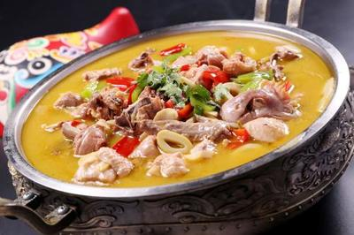
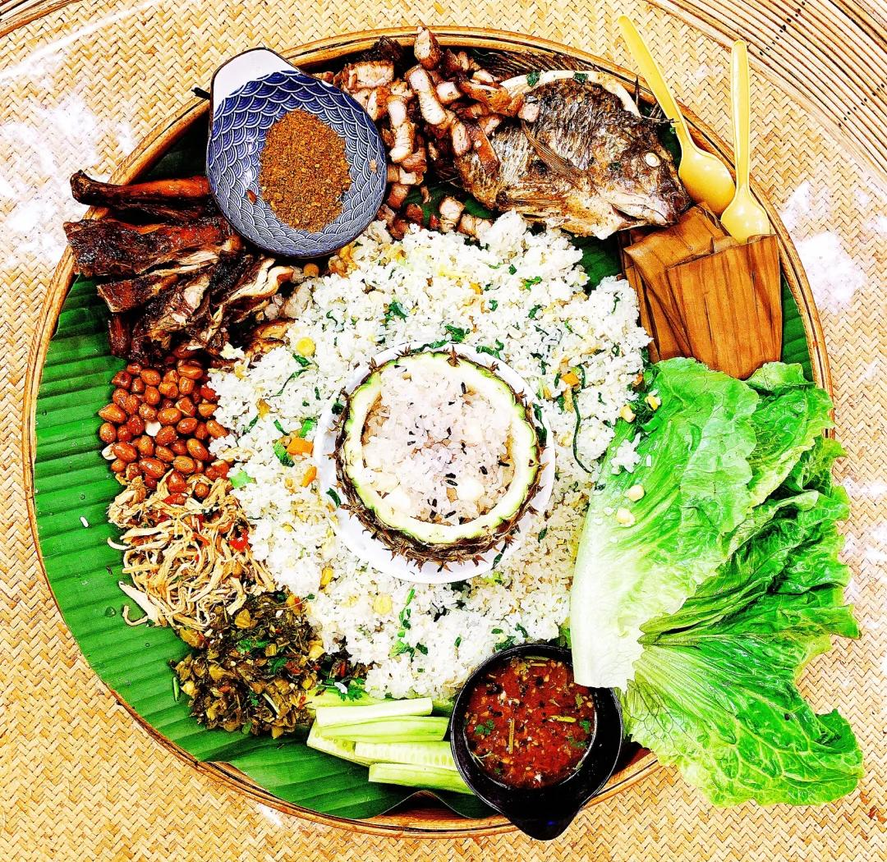
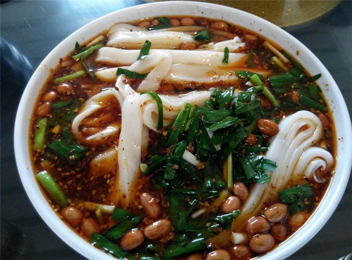
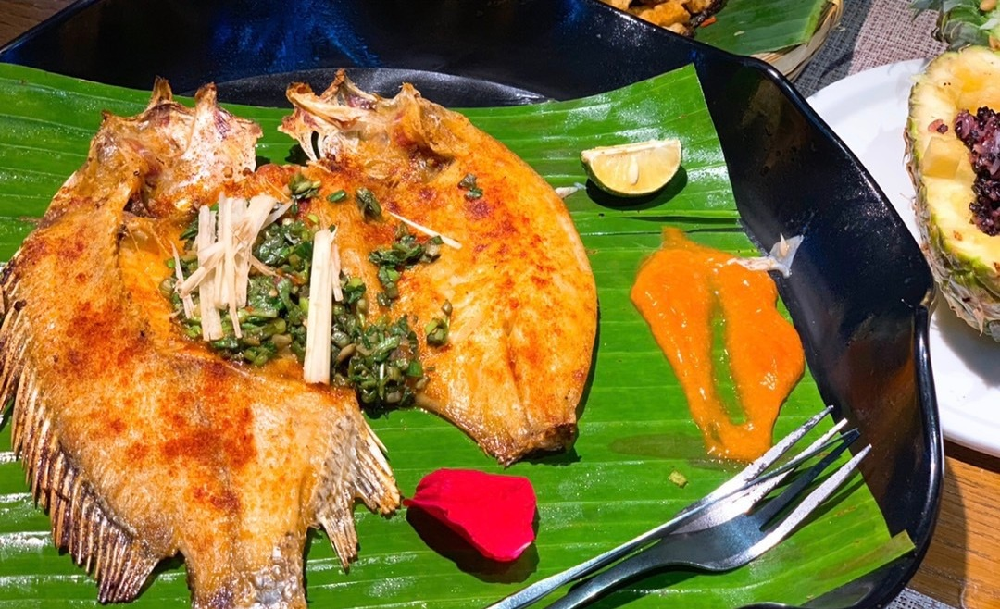
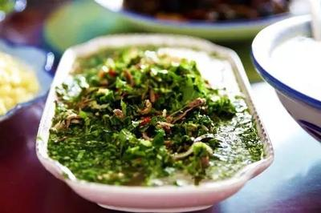
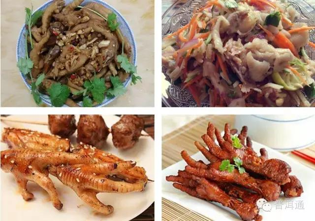

酸笋鸡是普洱经典家常菜，酸香开胃，肉质鲜嫩，是当地最具代表性的民族风味之一。

普洱傣族特色手抓饭，荤素搭配，色彩丰富，香气浓郁，充满热带风情。

普洱传统早餐，米干薄滑爽口，搭配秘制肉汤、花生、香菜，是当地人的日常美味。

用芭蕉叶包裹鲜鱼烤制，保留鱼肉鲜嫩，香料入味，是普洱少数民族特色烧烤。

普洱特色苦味美食，具有清热解暑功效，是傣族、拉祜族传统名菜。

酸辣爽口，口感劲道，是普洱街头最受欢迎的小吃之一。